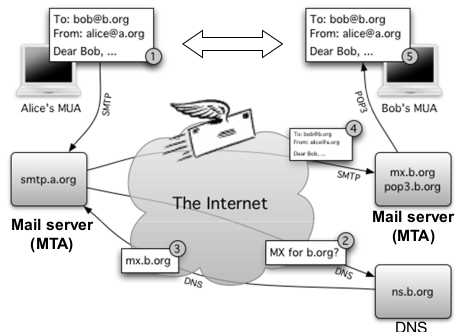
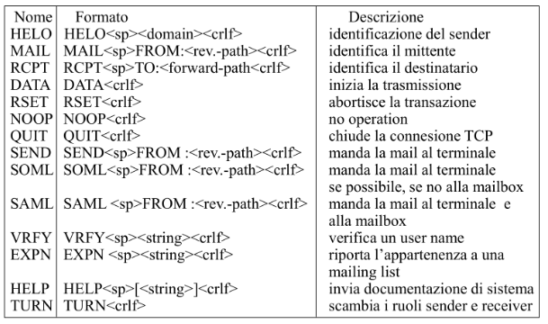
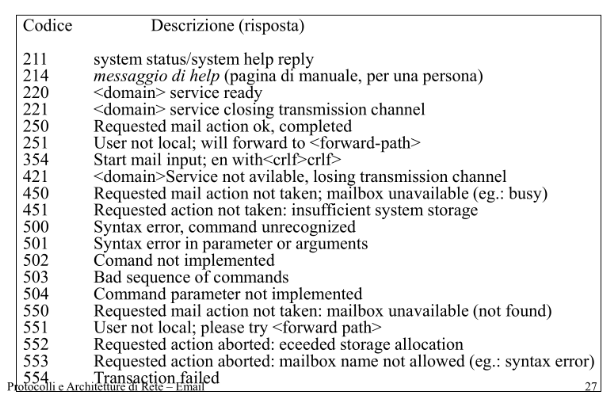
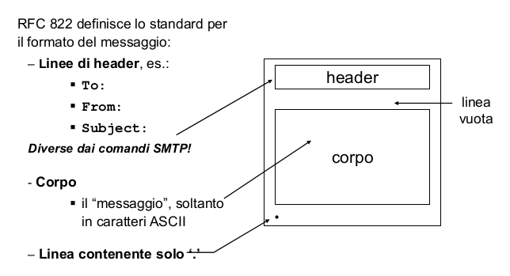
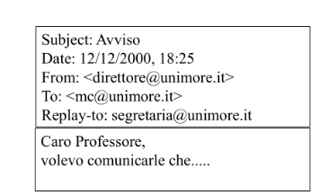
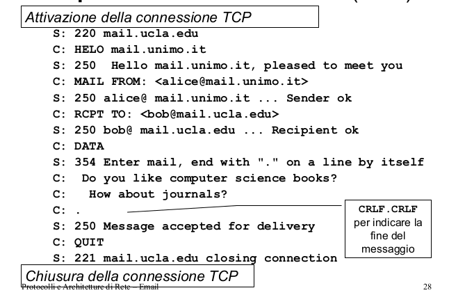

Posta elettonica
Table of Contents
1 Formato
username@domain, in cui:
- Username –> max 64 caratteri;
- Domain –> max 255 caratteri;
2 Mail server
si occupa di gestire l'invio e la ricezione della posta. I client si connettono al mail server del proprio domain quando vogliono inviare messaggi o leggere la posta nella propria casella. N.B: a volte i termini Mail server e Mail Transfer Agent sono usati uno al posto dell'altro. Componenti principali del Mail server:
- User Mailbox: casella di posta dell'utente, contiene
i messaggi ancora da leggere. Il nome della mailbox
solitamente corrisponde ad un username, ma a volte
può anche essere un'
alias. - Coda di messaggi di posta in uscita. Una mail può anche provenire dal domain locale, in tal caso l'MTA non deve contattare un'MTA esterno.
- [User Database]: a volte i mail server si possono interfacciare con dei database aggiuntivi, che ad esempio possono contenere le associazioni {utente:alias}.
Ricordiamo che il mail server memorizza anche i messaggi in uscita all'interno di una coda, in caso di destinazioni non raggiungibili o per effettuare ritrasmissioni in casi di errore.
2.1 MTA (Mail Transfer Agent)
E' il processo principale che trasferisce i messaggi da un computer all'altro. Può ricevere messaggi direttamente da un MUA(Mail User Agent) oppure da un altro MTA (relaying mode).
2.2 Interazione con il DNS
La prima informazione che l'MTA deve conoscere per inoltrare correttamente un messaggio è il mail server che gestisce il domain destinatario. Il DNS del dominio del mail server gestisce un resource record di tipo MX (Mail eXchanger record) che specifica come deve essere inoltrato il messaggio. In particolare, viene ritornata una lista con priorità dei mail server che possono ricevere la posta per quel dominio.
3 Fasi di trasmissione

- L'MTA legge soltanto il
dominiodel destinatario; - L'MTA effettua una
richiesta DNSper cercare i mail server del dominio destinatario. Se ad esempio l'indirizzo del destinatario fosse mirco.marchetti@studenti.unimore.it, allora l'MTA fa un'operazione di questo tipo:dig MX unimore.it
- Bob per leggere le sue mail, contatta l'MTA del domain locale usando il protocollo pop o il protocollo imap. Quindi per questa comunicazione NON viene usato il protocollo SMTP.
4 SMTP
E' il protocollo che media la comunicazione tra due MTA o tra un MUA(Mail User Agent) e un mail server. Usa il protocollo TCP per il trasporto affidabile di messaggi (di default si usa la porta 25). L'interazione è di tipo comando/risposta.
4.1 Comandi lato sender

4.2 Risposte lato receiver

4.3 Esempio di comunicazione
La comunicazione si divide in 3 fasi
- Handshaking(TCP);
- Trasferimento messaggi;
- Chiusura;
Il formato del messaggio (non del comando) SMTP è costituito da:
- header, contiene dei campi codificati;
- body, ossia un testo ASCII a 7 bit;
SMTP è quindi un protocollo interamente testuale. La codifica e la decodifica di allegati fa uso del protocollo MIME, che codifica informazioni binarie in sequenze di caratteri ACSII. Questo protocollo è nato proprio per integrare questo tipo di funzionalità per i messaggi di posta elettronica.  Esempio di un messaggio: \(\downarrow\):  Ecco un'esempio concreto di comunicazione \(\downarrow\): 